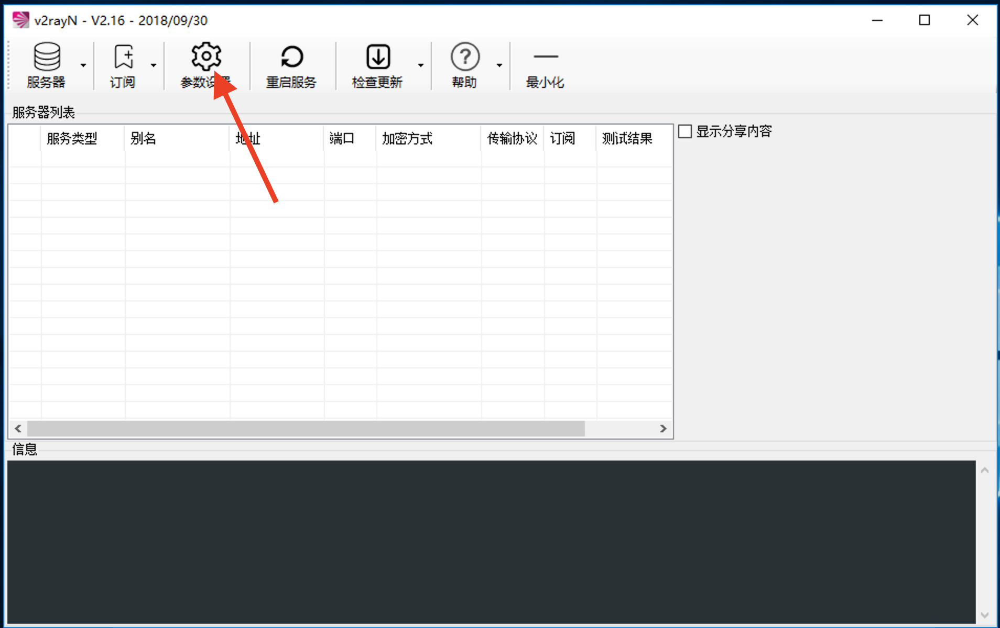
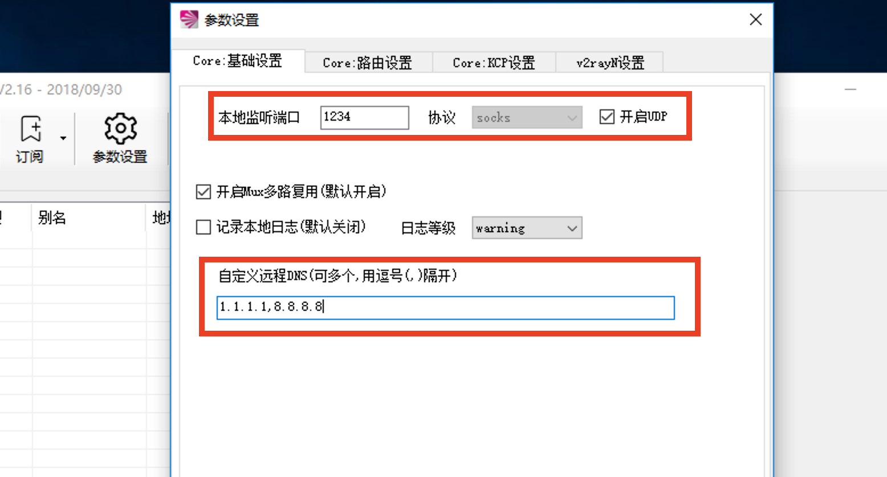
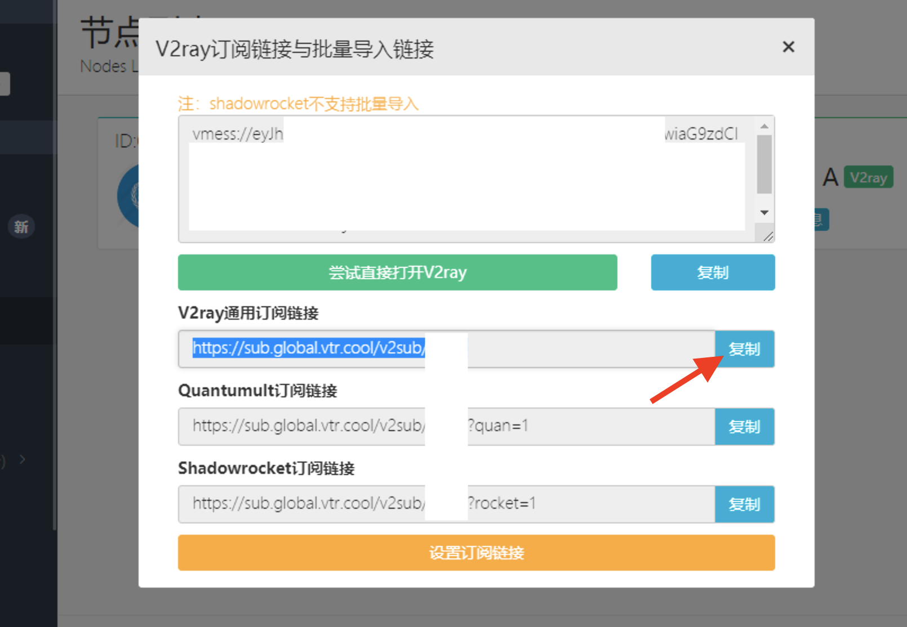
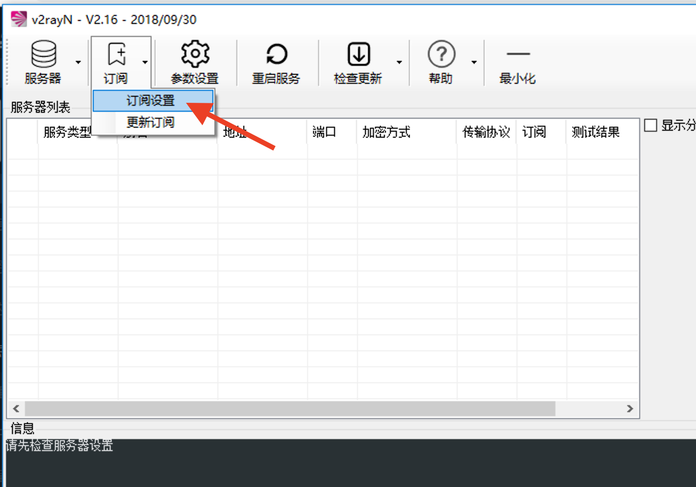
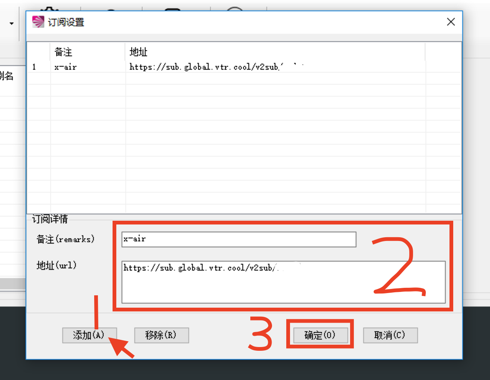
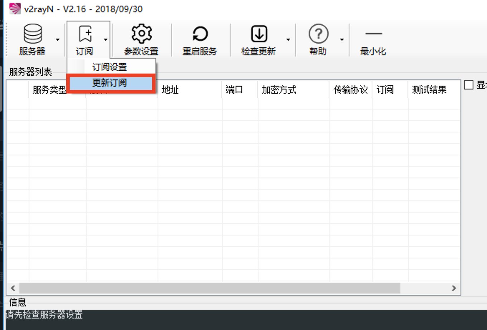
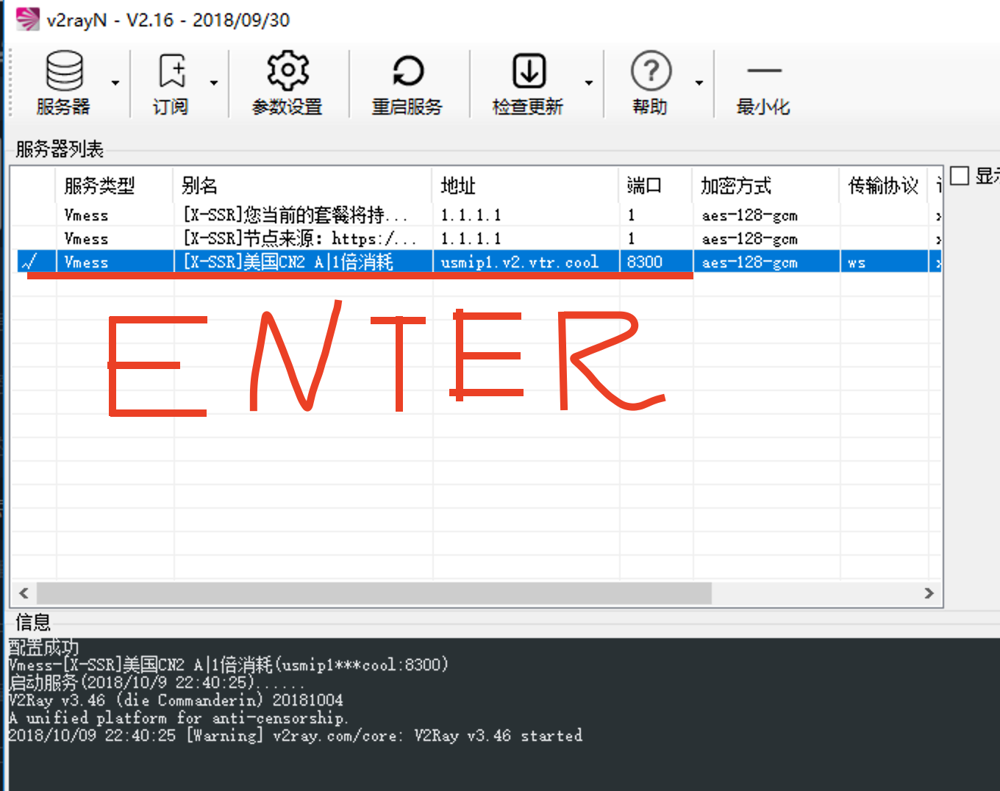
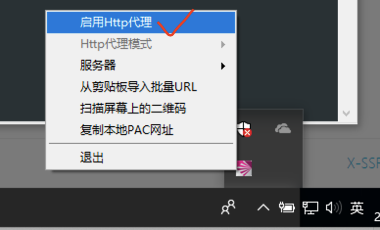
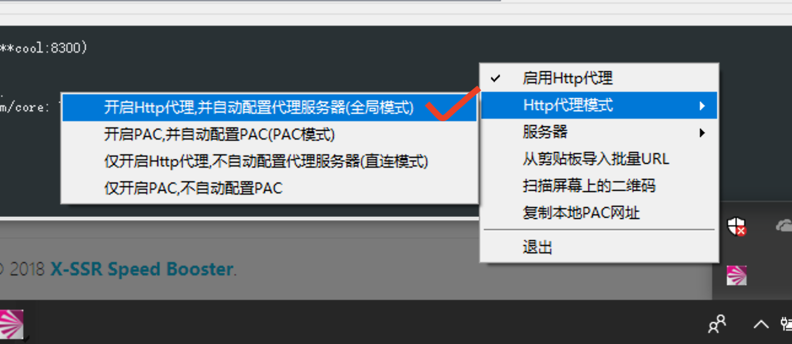

V2rayN
简介
V2rayN 是一个基于 V2Ray 内核的 Windows 客户端。
Github:https://github.com/2dust/v2rayN
使用
在这里，我们推荐使用我们的打包整合版本，方便快捷。
首先请先下载客户端
然后请解压您下载的压缩包，放到您喜欢的地方，给主程序V2rayN.exe添加一个快捷方式到桌面。
接下来我们打开主程序，给它做一些基础设置。
如图点击参数设置
编辑本地端口为您喜欢的数值，推荐1234，2333等不会与原有服务冲突的数字。然后设置自定义远程DNS为1.1.1.1,8.8.8.8，保证能够正常上网，搞定之后请点击确定完成设置。
接下来请到节点列表获取V2ray通用订阅链接，点击复制按钮。
回到主程序，请点击订阅->订阅设置。
先点击添加，然后在地址粘贴上刚刚复制的订阅地址，备注上填上x-air或其他您喜欢的备注名。点击确认完成设置。
设置完订阅就需要从订阅服务器上拉取您的节点信息。如图点击更新订阅，稍等片刻即可看到您的节点。
选中您想要使用的节点，然后按下回车（ENTER）键，选中节点。正常情况下，下面的控制台会显示配置成功。
请右键状态栏上的客户端图标完成最后的设置：启用HTTP代理以及启用全局模式。
接下来，您就可以正常地使用本站的加速服务啦！
小贴士
请务必设置好远程DNS设置，并确认您的系统时间是准确的，防止出现不必要的麻烦。